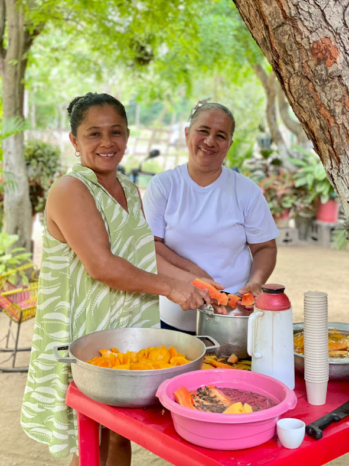

Get involved
The philosophy of Ubuntu—“I am because we are”—guides Sembrandopaz. We see ourselves not just as staff or project implementers, but as a community of practice rooted in the Montes de María and connected worldwide through leaders, allies, volunteers, and collaborators. Always open to new energy and ideas, we invite others to join us in cultivating peace in Colombia.

- Visit us: Come spend some time with us and get to know our work on the ground!
- Join our email list: Stay in touch with us, your wisdom and connection is invaluable!
- Donate: There is always a need, every size of gift helps!
- Volunteer: We are happy to receive visitors from around the world who are interested in supporting the work of Sembrandopaz in Colombia.
To me, Sembrandopaz is an example for this country, and for the world.
Delegations
Since 2005, Sembrandopaz has accompanied communities in Montes de María, rooted in the decades of peacebuilding experience of Director Ricardo Esquivia. Thanks to relationships of trust, delegations with Sembrandopaz offer honest, nuanced perspectives on the Colombian conflict and peacebuilding process. We welcome universities, faith groups, and other organizations to join customized visits that benefit both participants and local communities.
Challenging dominant narratives
Delegations provide immersive learning experiences where participants hear stories directly from those affected by conflict. These narratives often resist simplistic frameworks, encouraging critical reflection and deeper questions about Colombia’s complex reality.
Personal exploration
Delegations foster cultural exchange, human connection, and personal growth. Participants often leave inspired by the resilience of communities facing injustice, gaining fresh perspective on privilege and shared human experience.
International cooperation
With long-standing trust across social sectors, Sembrandopaz offers access to conversations otherwise closed to outsiders. Delegations strengthen global solidarity while supporting communities in holding authorities accountable for holistic reparations.
Sembrandopaz is doing so much more than peacebuilding in Colombia – they accompany communities in their pursuit of justice. During the trip, we saw how the deep and abiding political, social, and economic inequality that characterized the conflict is also embedded in peace processes. These unequal power dynamics make peacebuilders’ efforts essential in the struggle for social justice. The trip gave our delegation a unique opportunity to examine grassroots peacebuilding theories and practices in the midst of conflict. We came away inspired and humbled.
I studied the Colombian conflict prior to visiting the Montes de Maria region but the printed page falls short of expressing the level of mistrust that lingers in society and punctuates daily interactions. Sembrandopaz’s enduring relationships with various communities enabled our delegation to better understand the generational challenge of peacebuilding in the region.
Stay in touch
The support, participation, wisdom and ideas of our network of friends around the world has always been a key to our success at Sembrandopaz. We would love to stay in touch with you. In addition to visits and individual contacts, we have various mechanisms for you to keep up on our work:
Social media
For quick and frequent snippets of what we’re up to, including lots of pictures, follow us on Instagram and Facebook @sembrandopazcolombia.
If you’re interested to see more specific details of our work at the Experimental Farm Villa Bárbara, or the Morrocoy Nature Reserve, follow us @finca_villa_bárbara and @reservamorrocoy.
Bulletin
We send out a bulletin three times a year, sharing stories, updates and information about our work. Jump on our listserv so you can keep up to date with the latest news from Sembrandopaz.
Blog
Infrequently, we post on our blog site. This is a place where you can see reflections from volunteers who have come to work with us, as well as other articles about our work.
You can always feel free to contact us, for whatever reason! Send general inquiries to admin@sembrandopaz.org and we will get back to you as soon as possible.
Volunteer
Sembrandopaz has a rich history of welcoming volunteers of all ages and backgrounds—from environmentalists and students to pastors, retirees, and peacebuilders. Each brings new energy to our community, contributing through farm work, research, or simply living in solidarity.

To ensure a good experience, we ask volunteers to speak Spanish, cover their expenses, plan about three months in advance, and commit to at least a three-month stay. If you’re interested in joining us, we’d love to talk further!